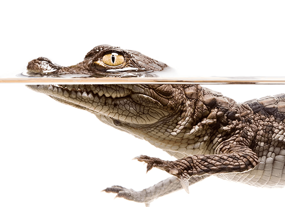

NATIONAL GEOGRAPHIC
Now we know how tabby cats get their stripes
ANIMAL
Of the nearly 60 million pet cats in the United States, one of the most common is the classic tabby—a coat pattern that features stripes, dots, and swirls and what looks like an M imprinted on the cat’s forehead. As popular as tabbies are (think Garfield the cat), scientists know little about how they get this distinctive appearance.
In a study published this week in Nature Communications, scientists report that the genes that set up the tabby pattern are activated in an embryo’s skin cells before the cat’s fur develops. The early skin cells even mimic tabby stripes under the microscope, a discovery never seen before in embryonic cells.
This unique genetic process may be the same mechanism that creates stripes and spots in wild felines, the authors theorize. The word “tabby” derives from al-‘Attābiyya, a quarter in Baghdad that produced a fine, striped silk taffeta in the 16th century. But the stripes themselves likely originate from the domestic cat’s direct ancestor, the striped Near Eastern wildcat.
The genetics behind the colors and patterns of domestic cats have long intrigued scientists. Charles Darwin, for example, proposed that most deaf cats were white with blue eyes. During development, he said, species sometimes acquired inconsequential changes, like hair color, because they were linked to other, more useful changes.
Cat cells of a different stripe
As part of an ethically approved research protocol, Barsh; Christopher Kaelin, a geneticist at Stanford University; and HudsonAlpha senior scientist Kelly McGowan collected nearly a thousand embryos that would otherwise have been discarded from veterinary clinics that spay feral cats, many of which are pregnant when admitted.
When McGowan examined the skin cells of embryos that were 25 to 28 days old under the microscope, she noticed that thicker areas of skin were interspersed with thinner areas, creating a temporary color pattern that resembled the tabby coloring of an adult cat.
She was especially surprised to find such a pattern so early in an embryo’s development, long before the presence of hair follicles and pigment, which are the keys to coloring in animals.
To get a closer look, the team analyzed embryos’ individual skin cells and found two different types, each of which expressed separate sets of genes. Among these, the gene that differed the most was the elaborately named Dickkopf WNT Signaling Pathway Inhibitor 4, or DKK4.
When they looked at how cells expressed DKK4 in embryos of about 20 days old, they discovered that the cells involved were the ones that formed the thick skin pattern a few days later.
Comments :
- john Very good
- john Very good
Leave a Reply
Your email address will not be published. Required fields are marked*
Related posts:
-
American crocodiles are spreading north in Florida. That’s a good thing.
On a canal bank lined with palm trees off the Banana River in Satellite Beach, Florida, in October, a 10-foot-long American crocodile basked in the midday sun, its toothy jaws opening as neighbors looked on from their docks.
View article -
What’s the real difference between a mutt and a designer dog
Though much attention is given to purebred and designer dogs, more than half of all dogs living in the United States are mixed breeds: the all-American mutt, celebrated on National Mutt Day on December 2.
View article -
 How these parrots went from the tropical jungle to the concrete jungle
How these parrots went from the tropical jungle to the concrete jungleTemple City, California, is an unassuming city east of Pasadena that’s home to the usual busy thoroughfares, shopping malls, and residential neighborhoods that one expects in densely developed Los Angeles County.
View article